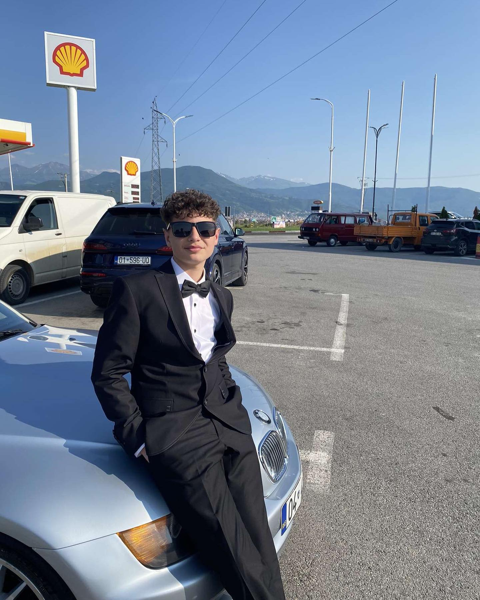
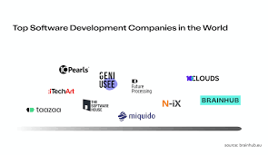

I am a 15 year old boy in "11 Marsi School" of Prizren that studies the software dezign path. In the same time there are the questions: Why did i choose this path ? , Why did i want to study programming. And the asnwers are simple and clear, i like creating something new, something of your own where other people can watch it and have fun on it (Websites). Programming is a path where you have to be creative with it by buliding websites or games. It needs dedication. Im currently on the right track and i hope i dont get distracted by it. For right now as you can see i have a short biography/discription of my self, so i hape it gets bigger from my achievments in the future, as i will talk right now.

The future
So the future has her things, like dreaming of something and planing something. As i said my dream is to be a future developer, but what i didnt mention is that i want to open a personal company. Where i can hire many other programmers. Opportunity, the meaning of which is simply the scopes that is available. And development opportunity is scope that is present to a person for the future development. Why a development is need to a person, of course for professional reason and that is the carrier. Carrere building is the first sector of development opportunity. So the future needs of development opportunities more factor like choose the right career and prepare are important for that.A plan will make the best use of everything that will lead to the success. So here is the plan. But the plan starts with step by step activity that leads to the ultimate goal. Steps are Things need to do. So for right now im dedicated to learn programming and if i follow this track, i know i will succsed in it. Beacuse thats how life works, if you work on something for a long period of time the succsess will come by his self.
Programming companies:

INSPIRATION
For the path,hobby you chose on a day to day life, it always starts from the inspiration.You get
inspirated by someone
For my self i got inspirated by my cousin, he is lets call a mid developer that has a 5 year experience on programming.
At first i didn't understand what he was doing,i just saw words with diffrent colors and codes. So i was courious what is
it.
And he started giving me information about for what is it and the programming
languages.
So i started studying it by myself and got to this point where i can say i know the basics of it.